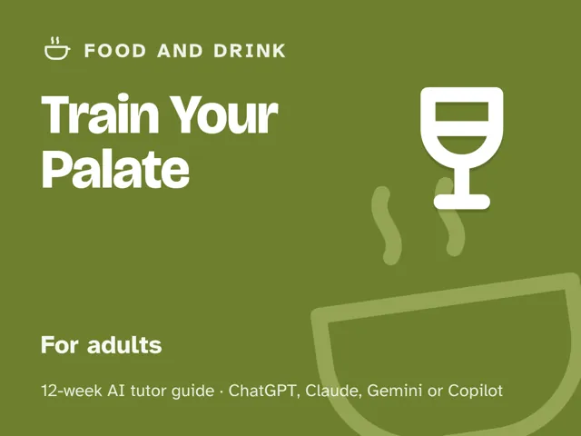

Train Your Palate
$29Instant download: a PDF to read, a browser copy, and the AI-tutor file you hand straight to any AI assistant.Buy it on Etsy →
Take the free placement check first: 15 minutes, and it names the week to start at.
A masterclass you actually finish. Most of us eat and drink on autopilot; this teaches you to taste. You'll learn the sensory science underneath flavor: the five basic tastes, why aroma is most of what you call "flavor," how texture and temperature change everything, and why perception is genuinely trainable. Your AI tutor plays sensory coach: it sets up structured tastings, makes you predict what you'll perceive before you taste, then helps you name it and file it in memory. Twelve weeks later you can taste with precision, generate your own pairings, and diagnose exactly what a dish or drink is missing, and put real words to all of it.
What you get
- 12 deep weekly sessions (~60 minutes each), every one built the same reliable way: a plain-language concept explainer, a concrete worked example, a minute-by-minute session plan with the AI-tutor prompts built in, a "show me" checkpoint to confirm you've got it, common mistakes to avoid, and practice to lock it in.
- "Never used an AI chat assistant? Start here": a five-minute onboarding that takes a complete beginner from zero to ready: which free AI assistant to open, how to start a chat, and how to paste your first prompt. No paid plan needed.
- Four rescue prompts in the front matter for when a tasting goes sideways: your samples blur together, the AI starts describing the flavor instead of letting you find it, a tasting feels too easy, or you want to check you truly understand what you perceived.
- A "how I taste now" framework (tastes, aromas, textures, vocabulary, and pairing logic) you build across the season and can apply to anything you eat or drink.
The 12 weeks
- Taste vs Flavor: How Perception Really Works
- The Basic Tastes, Calibrated
- Aroma: Most of Flavor Is Smell
- Texture, Temperature & the Whole Mouth
- Building a Flavor Memory & Vocabulary
- Balance: Fixing "Something's Missing"
- Why Pairings Work: Complement & Contrast
- Tasting Critically: Coffee, Chocolate, Olive Oil & More
- Designing a Flavor Experience
- Project Week I: Compose a Pairing or Dish by Palate
- Project Week II: Host a Tasting & Guide Others
- Demo Day & the Trained-Palate Habit
Who it's for
Adults who love food and drink and want real discernment: to taste with precision, pair confidently, and put words to flavor. Maybe you can tell good coffee from bad but can't say why, or you want to build a pairing from scratch instead of googling one, or you just want to stop swallowing without noticing. No expert background required; curiosity and a willingness to taste slowly are the whole prerequisite.
How this differs from The Chemistry of Cooking
They're siblings, and they're mirror images. The Chemistry of Cooking trains the mechanism: what salt, heat, and emulsions do to the food. Train Your Palate trains the perception: what your senses do with the result, and how to sharpen and name it. One makes you a better cook; this one makes you a better taster. Take either alone; together they close the loop between making flavor and perceiving it.
Why this instead of a free chatbot
Ask a raw chatbot "what pairs with this?" and it hands you a list; you're still guessing, and your palate learns nothing. This pack ships the structure a chatbot lacks: a real 12-week progression from basic tastes to aroma to whole-experience design, and a tutor set up to run structured tastings, make you predict before you taste, and then help you name and remember what you perceived, which is how a palate is actually built. You leave able to generate pairings and diagnose "what's missing" on your own, not dependent on the next prompt.
Safety & allergies
This is educational content, not professional advice, and it involves tasting food and drink. Taste only safe, fresh, properly handled and stored items, never anything spoiled, unlabeled, or of unknown origin. Respect every allergy, intolerance, and dietary restriction, yours and any guests', and check ingredients before anyone tastes. Alcohol tasting is entirely optional, adults-only, and only where legal; it's never required to complete the course, so spit or skip freely and never drive after. Stop the moment you're unsure.
FAQ
- Do I need any experience or a "refined" palate? No. Week 1 is a nose-pinch test anyone can do. The whole point is that perception is trainable; you build the palate, you don't need to arrive with one.
- Isn't this just wine tasting? Broader. Wine is one example among coffee, chocolate, olive oil, and everyday food. The method (isolate, predict, taste, name) applies to anything, and alcohol is always optional.
- Do I have to drink alcohol? No. Every tasting works with coffee, tea, chocolate, oils, fruit, and everyday food. Alcohol tasting is optional, adults-only, and only where legal.
- Which AI does it use? Any modern AI assistant: ChatGPT, Claude, Copilot, or Gemini. Free versions are enough; no paid plan needed. Never used an AI chat assistant before? The guide's first section walks complete beginners through setup in about five minutes.
- Is this safe? Who's liable? It's educational only. Taste only safe, fresh, properly handled items, check for allergies and dietary restrictions every time, and keep alcohol optional and adults-only. You assume all risk; the author and AI tutor are not liable for injury, illness, or adverse reaction.
- Refunds? Standard marketplace refund policy applies.
$29Instant download: a PDF to read, a browser copy, and the AI-tutor file you hand straight to any AI assistant.Buy it on Etsy →